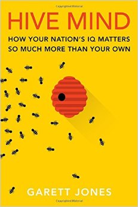
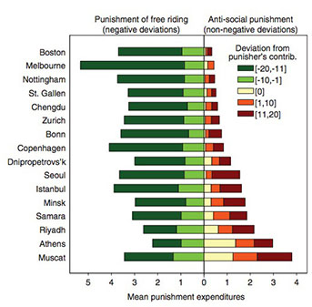
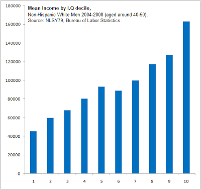

2015년 12월 8일
Please provide the paragraph you would like me to translate.
개렛 존스(Garett Jones)의 저서 하이브 마인드(Hive Mind)는 전형적인 대중 과학서의 형식을 띠고 있다. 흥미로운 가설을 제시하고, 눈길을 끄는 일화 형식으로 흥미로운 연구 결과들을 길게 늘어놓으며, 뒤따르는 질문은 그리 많이 남기지 않는 식이다.
이 책의 주제(이자 부제)는 “왜 당신 개인의 IQ보다 국가의 IQ가 더 중요한가”이다. 부유한 국가와 가난한 국가 사이의 격차는 놀라울 정도로 끈질기게 유지되어 왔으며, 이제 상식적인 수준에서도 단순히 몇몇 국가가 먼저 출발했고 나머지는 따라잡을 시간이 조금 더 필요했을 뿐이라는 설명 이상의 무언가가 작동하고 있다는 점을 마침내 이해하기 시작했다. 가진 자와 가지지 못한 자를 가르는 것은 단순한 일시적 자본 부족 그 이상이어야 하며, 존스(Jones)는 IQ가 그 퍼즐의 일부일 것이라고 생각한다.

그는 소위 “IQ의 역설”이라는 개념으로 논의를 시작한다. 개인 차원에서 IQ는 그다지 중요하지 않다. 물론 개인 소득과 같은 성공 지표와 상관관계가 있긴 하지만, 그 정도는 약한 편이다. 반면, IQ는 국가적 성공을 예측하는 매우 강력한 지표가 된다. 한 국가의 평균 IQ 점수는 그 나라가 산업화되었는지, 부유한지, 제1세계 국가인지, 그리고 그 외의 온갖 긍정적인 특성들을 갖췄는지와 매우 밀접한 상관관계를 보인다. 존스(Jones)는 다음과 같이 쓴다.
개별 학생의 시험 점수가 이후의 임금을 어떻게 예측하는지 살펴본 결과, 특정 국가 내에서는 시험 점수가 높은 개인이 평균보다 아주 약간 더 많은 수입을 올리는 데 그쳤으나, 평균 시험 점수가 높은 국가들은 예외적일 정도로 빠르게 성장했다는 사실이 밝혀졌다. 여기서 다시 한번 IQ의 역설이 나타난다. 우리가 그것을 IQ 테스트라고 부르든, 수학 시험이라고 부르든, 혹은 다른 무엇이라 부르든 간에, 표준화된 시험 점수는 국가 간의 거대한 차이는 예측하지만 개인 간의 차이는 완만하게만 예측한다는 점이다.
그 주장에 대해서는 이 리뷰의 2부에서 좀 더 자세히 다루겠지만, 일단은 그 주장을 진지하게 받아들여 인과관계가 있다고 가정해 보자. 왜 IQ가 개인보다 국가 차원에서 더 중요하게 작용하는 것일까?
존스(Jones)의 이론에 따르면, IQ는 죄수의 딜레마(prisoner’s dilemma) 식의 상황에서 사람들이 협력하고 비제로섬(non-zero-sum) 해법을 모색하는 능력을 측정하는 척도이다. 대부분의 국민이 높은 IQ를 가진 국가는 상호 이익이 되는 윈-윈(win-win) 제도를 만들어낼 것이다. 반면, 대부분의 국민이 낮은 IQ를 가진 국가는 서로를 이용해 먹고 파이를 두고 싸우느라 너무 바쁜 나머지, 경제 성장에 필요한 제도를 결코 구축하지 못할 것이다.
먼저 그는 IQ가 시간 선호도(time preference)와 밀접하게 연관되어 있다는 연구 결과들을 검토한다. 즉, 테스트된 IQ가 높을수록 지금 당장의 작은 보상보다 나중의 큰 보상을 선호할 가능성이 더 높다는 것이다. 예를 들어, 몇 년 전 독일에서 진행된 한 실험에서 참가자들에게 지금 100유로를 받을지, 아니면 1년 뒤에 X유로를 받을지 선택하게 했다. 교육 수준, 소득 등을 통제한 후에도 IQ가 15점 높아질 때마다 후자를 선택하는 데 필요한 X의 가치가 2.50유로씩 변했다. 미국 군대에서 일어난 자연 실험을 분석한 훌륭한 연구에 따르면, 실제 삶에서도 동일한 현상이 나타나는 것으로 보인다. 냉전 이후 군 규모를 축소하기 시작했을 때, 군은 병사들에게 다양한 퇴직금 패키지 중 하나를 선택하게 했다. 어떤 패키지는 즉시 소액의 돈을 지급했고, 다른 패키지는 더 긴 기간에 걸쳐 훨씬 더 많은 돈을 지급했다. 군은 모든 인원의 입대 당시 IQ 기록을 꼼꼼히 보관하고 있었기에, 이는 실제 세상에서 어떤 일이 벌어지는지 확인할 수 있는 완벽한 기회였다. 결과는 이론과 일치했다. IQ는 더 장기적이지만 더 수익성이 높은 패키지를 선택하는 경향을 예측했다. 현재는 이 결과를 확인해 주는 연구가 약 20편 정도 있다. 또한 국가적 IQ가 해당 국가의 저축률과 일치하며, 인내심 있고 검소한 사람들에게 둘러싸인 개인 역시 더 인내심 있고 검소하게 행동한다는 연구들도 있다. 옛 격언처럼 좋은 사회를 건설하는 것이 "자신은 결코 그 그늘에 앉지 못할 나무를 심는 것"이라면, 고지능 국가의 사람들은 이미 큰 우위를 점하고 있는 셈이다.
둘째로, 그는 실험 게임 이론의 연구 결과들을 검토한다. 하필이면 트럭 운전 학교에서 수행된 일련의 실험들은 '윈도우 게임(Window Game)'을 조사했다. 두 명의 플레이어가 사이에 칸막이가 있는 책상에 앉아 있으며, 칸막이에는 작은 창문이 하나 있다. 플레이어 A는 5달러를 받고, 그중 원하는 만큼을 창문을 통해 플레이어 B에게 건넬 수 있다. 그러면 플레이어 B는 다시 원하는 만큼을 창문을 통해 플레이어 A에게 돌려줄 수 있으며, 그 후 게임은 종료된다. 창문을 통과하는 모든 돈은 3배가 된다. 예를 들어 플레이어 A가 5달러 전액을 건네면 15달러가 되고, 플레이어 B가 이 15달러를 다시 돌려주면 45달러가 된다. 즉, 돈을 건네는 것은 수익성이 높은 전략이지만 상대 플레이어에 대한 상당한 신뢰가 필요한 전략이다. 나 역시 여기서 최선의(혹은 도덕적으로 옳은?) 전략이 무엇일지 고민하다 잠시 '너드 스나이핑(nerd-sniped, 지적 호기심을 자극하는 문제에 매몰되어 하던 일을 잊는 것)'을 당했지만, 다시 본론으로 돌아가자면 다음과 같다. 지능 지수(IQ)가 높은 플레이어일수록 창문을 통해 돈을 건넬 가능성이 컸다. 또한 이들은 호혜적으로 행동할 가능성, 즉 선에는 선으로 악에는 악으로 갚을 가능성이 더 높았다. '공공재 게임(Public Goods Game, N명의 플레이어가 각각 10달러로 시작해 원하는 만큼을 공동 기금에 넣고, 이후 기금의 3배가 된 금액을 기부 여부와 상관없이 모든 플레이어에게 균등하게 배분하는 게임)'에서 고지능 플레이어들은 기금에 더 많은 돈을 넣었다. 또한 이들은 무임승차자에게 벌칙을 주는 규칙에 투표할 가능성이 더 높았다. 반복되는 '죄수의 딜레마(prisoners’ dilemmas)' 상황에서도 이들은 협력할 가능성이 더 높았으며, 전통적인 '팃포탯(tit-for-tat, 받은 대로 갚기)' 전략에 더 가깝게 플레이했다. 게임이 길어지고 복잡해질수록 하나의 패턴이 더 명확하게 드러났다. 고지능 플레이어가 한 명 있는 것은 어느 정도 도움이 되었지만, 모든 플레이어가 고지능자일 때는 놀라운 결과가 나타났다. 그들은 모두 빠르게 상황을 파악하고 서로 협력했으며, 그 협력을 강제할 수 있는 안정적인 시스템을 구축했다. 존스(Jones)가 직접 진행한 10라운드 시리즈에서, 고지능 플레이어들로만 구성된 게임은 평균보다 5배 더 많은 협력이 일어났다.

셋째로, 그는 이른바 'O-링 팀 이론(O-ring theory of teams)'을 검토한다. 이 이론은 챌린저(Challenger)호 폭발 당시 오작동했던 우주선 부품의 이름을 딴 것이다. 이론의 내용은 다음과 같다. 우주선이 작동하기 위해 백만 개의 서로 다른 부품이 필요하다고 가정해 보자. 이는 부품 하나만 있으면 되는 우주선을 만드는 것보다 단순히 백만 배 더 어려운 일이 아니다. 부품 하나를 만들어 99%의 확률로 정확하게 제작할 수 있는 우주선 엔지니어가 있다면, 부품 하나짜리 우주선에는 이것으로 충분할 것이다. 우주선 성공률 99%는 꽤 훌륭하게 들리기 때문이다. 하지만 우주선에 백만 개의 부품이 들어가고 그 모든 부품이 완벽해야 한다면, 그런 엔지니어 백만 명과 함께했을 때 성공 확률은 $0.99^{1,000,000}$, 즉 0이 된다. 더 유능한 우주선 엔지니어들을 찾아야만 할 것이다!
이 점은 지능 지수(IQ)가 높은 사회가 복잡한 프로젝트를 수행할 때 큰 우위를 점하게 한다. IQ가 낮은 사회에도 혼자서는 훌륭한 성과를 낼 수 있는 고지능 개인이 몇 명 있을 수 있지만, 우주선 제작 팀에 단 한 명의 저지능 개인이라도 포함되는 순간 모든 것이 완전히 망가질 수 있다. 이 이론은 결국 사람들이 능력에 따라 분리될 것임을 시사한다. 네 명의 우주선 엔지니어가 있는데, 그중 두 명은 유능하고(정확도 99%) 두 명은 평범하며(정확도 50%), 부품 두 개짜리 우주선 두 대를 만들고 싶다고 가정해 보자. 만약 각 팀에 유능한 엔지니어 한 명과 평범한 엔지니어 한 명을 짝지어준다면, 각 우주선의 성공 확률은 $0.99 \times 0.50 = 49\%$가 되어, 예상되는 성공 우주선의 총합은 0.98대가 된다. 반면, 유능한 엔지니어 두 명을 한 팀으로 묶고 평범한 엔지니어 두 명을 다른 팀으로 묶는다면, 첫 번째 우주선의 성공률은 98%, 두 번째는 25%가 되어, 예상 성공 우주선의 총합은 1.23대가 된다. 단지 엔지니어를 능력별로 분리한 것만으로 우주선 0.25대분을 더 얻은 셈이다. 고지능자가 많을수록 이 과정은 쉬워지며, 경제의 더 많은 부분을 백만 개의 부품이 들어가는 우주선 같은 복잡한 일에 투입할 수 있다. 반대로 저지능자가 많을수록 이 과정은 어려워지며, 경제는 실패 허용치는 높지만 수익성은 낮은 제품들에 머물게 된다.
마지막으로, 지능 지수(IQ)가 높은 사람들은 똑똑하다(출처 필요). 이들은 어떤 정책이 좋고 나쁜지를 파악하는 경향이 있으며, 좋은 정책에 투표한다. 여기서 존스(Jones)는 브라이언 캐플런(Bryan Caplan)의 The Myth of the Rational Voter를 자주 인용하며, 유권자들이 자신의 이익이 무엇인지 파악하는 데 그리 능숙하지 않다는 점을 보여준다.
하지만 그는 좀 더 긍정적인 관점을 제시한다. 지능 지수(IQ)가 높은 유권자들은 실제로 이런 능력이 뛰어나다는 것이다. 조지 메이슨 대학교(GMU) 경제학자인 존스(Jones)에게 있어 "사람들이 합리적으로 투표하는가"를 측정하는 기준은 당연히 "그들이 얼마나 자유 시장에 우호적인가?"이다. 그는 높은 IQ가 시장 우호적 태도를 상당히 강력하게 예측하며, 사실상 교육 연수보다 더 정확한 예측 지표라는 점을 발견했다. 통제된 실험에서 IQ가 높은 사람들은 특정 기사가 자신의 정치적 편향과 모순된다는 점을 인정할 가능성이 더 높았으며, 일부 국가(미국은 제외)에서는 IQ가 높은 사람들이 투표에 참여할 가능성이 더 높았다.
그런 다음 그는 이 모든 내용을 일종의 정주 약탈자 프레임워크(stationary-bandit framework)로 엮어내는데, 여기서 정부는 대중을 착취하려는 이기적인 군벌들로부터 시작된다.
"모든 정부는 문구점 강도들로부터 시작되었다고들 하지."
"정말?"
"응. 헌법을 쓸 만한 좋은 종이를 충분히 훔쳐야 했거든."
만약 당신이 지능이 높은 이기적인 군벌이고, 당신의 억압적인 장관들 또한 마찬가지로 지능이 높다면, 당신은 자본가들의 재산을 즉시 몰수하는 대신 그들이 제 할 일을 하도록 내버려 둘 때 몇 년 후면 몰수할 수 있는 재산이 훨씬 더 많아진다는 사실을 깨달을 만큼의 인내심을 갖추고 있을 것이다. 또한 어떤 갈등이 발생해 내전으로 이어질 위기에 처하더라도, 당신은 모두가 협력하여 파이의 크기를 키우는 윈-윈(win-win) 솔루션을 협상하는 데 능숙할 것이다. 존스(Jones)는 반복되는 죄수의 딜레마(iterated prisoner’s dilemmas)로 치환될 수 있는 여러 정치적 상황들을 나열한다. 예를 들어, 양측 모두 선거 결과를 존중하는가, 아니면 패배한 쪽이 정부에서 쫓겨날 때마다 매번 싸움을 걸려고 하는가? 관료 조직은 국가를 효율적으로 운영하려 하는가, 아니면 서로 권력 다툼을 벌이는가? 군의 각 분과들은 작전 중에 서로 협력하는가, 아니면 각자 자기 지도자의 영광을 차지하려 하는가? 지능이 높은 국가라면 이러한 문제들은 저절로 해결되는 경향이 있으며, 실제로 IQ 점수는 부패인식지수(Corruption Perceptions Index)와 상당한 상관관계를 보인다. 기업가들도 이 점을 알고 있기에, 이러한 프로젝트를 용인하고 황금알을 낳는 거위의 배를 가르지 않는 역사를 가진 국가에서 복잡한 장기 프로젝트를 기꺼이 시작하는 것이다.
존스(Jones)는 정책적 처방에 대해 깊이 파고들지는 않지만, 자신의 이론이 가져오는 두 가지 결과에 대해서는 언급한다. 첫째, 그는 플린 효과(Flynn Effect, IQ가 세대를 거듭하며 상승하는 세속적 추세)의 열렬한 지지자이며, 국가들이 이를 장려하여 국민 IQ를 높이고 더 효율적인 제도를 갖춰야 한다고 생각한다. 불행히도 그는 플린 효과의 원인이 무엇인지 다른 사람들만큼이나 전혀 모르고 있으며, 그래서 이 주장은 마치 "우리가 어떻게 하고 있는지조차 모르는 그 일을 계속하라"는 식으로 읽힌다. 그는 납 성분을 제거하는 것이 도움이 될 것이라고 생각하며(사하라 이남 아프리카가 2006년이 되어서야 가장 마지막으로 유연 휘발유를 금지했다는 사실을 알고 있었는가?), 영양, 교육 및 보건 개입에 대해서도 일반적인 기대를 가지고 있다.
하지만 당연하게도 모두가 이야기하는 부분은 이민 문제다. 이것은 이 책의 주요 초점이 아니다. 실제로 존스(Jones)는 다른 어떤 주제보다 이민이 가져다주는 온갖 이점들에 대해 더 많은 시간을 할애한다.
약 10년 전, 수십 명의 미국 경제학자들이 더 많은 이민을 지지하는 공개 서한에 서명했다. 이 서한은 여러 지점을 짚었다. 저숙련 이민자가 미국 태생 시민의 임금을 낮추는 효과는 거의 없거나 매우 적어 보인다는 점, 이민이 공식 통계에는 잡히지 않는 방식으로 부유한 국가의 경제에 도움을 준다는 점, 그리고 저숙련 이민의 최대 수혜자는 이민자 본인들이라는 점 등이 그것이다. 이들의 삶은 하루 1달러 수준의 빈곤이라는 악몽에서 벗어나, 적당한 안락함과 건강, 그리고 안전이 보장되는 영역으로 변화하는 경우가 많다. 인디펜던트 인스티튜트(Independent Institute)가 배포한 이 외교적으로 정교하게 작성된 서한에는 좌파와 우파 경제학자들이 모두 서명했다. 나는 이 서한에 서명한 것을 항상 기쁘게 생각한다. 이 글은 이민이 가진 거대한 가능성을 요약하고 있기 때문이다. 최극빈층의 빈곤을 끝내는 것에 관심이 있는 사람이라면, 이주(migration)는 잠재적 해결책 목록의 최상단에 놓여야 한다.
하지만 그는 자신의 우려 사항들에 대해 한 페이지와 4분의 3페이지 정도를 할애한다.
더 부유하고 생산적인 국가로 유입되는 저숙련 이민의 경제학은 상당히 명확하다. 이민자에게는 인생을 바꿀 만큼 좋은 소식이며, 소위 '원주민' 저숙련 노동자들에게 미치는 영향은 어느 쪽으로든 꽤 미미하다. 단기적인 관점에서 보거나, 같은 국가 내의 여러 도시를 비교해 볼 때 이는 사실이다. 그리고 결정적으로, 이러한 연구들은 정치적 요소를 배제하며 저숙련 이민자가 고숙련 국가의 정부 제도에 영향을 미치지 않는다고 가정한다. 하지만 앞선 장들에서 보았듯이, 혹은 유권자의 교육 수준과 신념 사이의 연관성을 다룬 브라이언 캐플런(Bryan Caplan)의 연구에서 보았듯이, 그리고 국가 평균 시험 점수가 높을수록 평균 부패 수준이 낮은 경향이 있다는 국가 간 연구나 에피스토크라시(epistocracy, 지식인 정치)에 관한 철학적 논쟁에서 보았듯이, 좋은 정치는 어느 정도 식견을 갖춘 시민들에게 달려 있는 것으로 보인다. 여기서 우리는 현재 저숙련 상태인 이민자들과 관련된 핵심적인 갈등 상황에 도달하게 된다. 바로 장기적인 제도에 미칠 수 있는—여기서 '수 있는'이라는 가능성을 강조한다—영향이다. 저숙련 이민자들은 자신들이 누려온 부의 창출 기회를 약화시키는 정책에 투표하는 경향을 보일 것인가? 아니면 저숙련 이민자들과 그 후손들이 높은 수준의 인적 자본을 쌓아, 결과적으로 유권자들의 평균적인 정보 수준을 높이게 될 것인가?
문단 전체에서 누군가 뜨거운 숯불 위로 끌려가고 있는 듯한 느낌이 든다. 비숙련 이민자를 "현재로서는 덜 숙련된" 이들이라고 칭하고, 현지인을 "소위 현지 덜 숙련 노동자"라고 부르는 고집부터, 마지막 부분에 나오는 묘한 제안—어떤 이유에서인지 덜 숙련된 노동자들이 오히려 유권자의 평균 정보 수준을 높일 수도 있다는 주장—에 이르기까지 그렇다. 왜냐하면 정말 누가 알겠는가? 이 책은 결코 《벨 커브(The Bell Curve)》 같은 책이 아니다. 이 책은 자신의 내용이 논쟁적인 정치적 함의를 가질 수도 있다는 사실에 깊이 짜증이 나 있으며, 가능한 한 조심스럽게 이를 피하려 노력하고, 대체로 성공한 과학 서적이다.
이 책의 몇몇 부분은 설득력이 부족하다고 느껴졌거나, 적어도 더 많은 의문을 남겼다.
첫째, 《하이브 마인드(Hive Mind)》의 '핵심 역설'은 왜 IQ가 개인 간에는 예측력이 매우 낮지만, 국가 간에는 예측력이 매우 높은가 하는 점이다. 이에 대한 존스(Jones)의 답변은 [사회적 협력에 관한 길고 복잡한 이론]이다. 그냥 "표본 크기가 커질수록 신호 대 잡음비(signal-to-noise ratio)가 높아지기 때문"이라고 하면 안 되는 걸까?
존스(Jones)의 역설은 내가 요약 통계를 경계하라(Beware Summary Statistics)에서 던졌던 질문과 매우 유사했다. 다만 내가 궁금해했던 것은 국가가 아니라, 추상화된 IQ 분위수(deciles)에 관한 것이었다.

개인적 차원에서 IQ의 예측력은 완만한 수준이다. 하지만 IQ 90인 수천 명, IQ 100인 수천 명, 그리고 IQ 110인 수천 명의 평균을 내어보면, IQ와 소득 사이의 관계는 매우 명확해진다. 이 정도의 추상화 수준에서는 이를 더 이상 "완만하다"고 표현하는 것이 적절하지 않다.
첫 번째 블록은 IQ 80 정도의 사람들에 해당하며, 마지막 블록은 IQ 120 정도의 사람들에 해당한다. IQ 80에서 120으로 올라갈수록 소득은 거의 4배로 뛴다. 심지어 이는 각종 최저임금법 등으로 인해 그 효과가 상쇄되었을 가능성이 큰 미국 내에서의 결과다.
더 자연스러운 예를 들어보자면, 미국의 유대인들은 WASP(White Anglo-Saxon Protestant, 영국계 백인 개신교도)보다 IQ가 10~15점 더 높고, 수입은 약 두 배 정도 더 많다. 이는 대부분의 유대인이 오직 유대인하고만 교류하거나 그들만의 기관을 만들지 않음에도 불구하고 나타나는 현상이다. 즉, 그들이 하이브 마인드(hive mind)를 형성할 기회는 거의 없다는 뜻이다. 개개인의 IQ 차이가 합쳐지면서 강력한 효과를 만들어내는 것으로 보인다.
국가 간 소득 격차는 한 국가 내 개인 간 소득 격차보다 훨씬 크다. 하지만 국가가 고려할 필요가 없는 개인의 직업 선택(나는 투자 은행원이 될 수도 있었겠지만, 예술가가 되기를 택했다)과 같은 요인들을 추상화하여 제외했을 때, 국가 간 격차에서 국가 IQ가 설명하는 비율이 개인 간 격차에서 개인 IQ가 설명하는 비율보다 더 크다는 점이 내게는 명확해 보이지 않는다. 만약 해당 요인을 조정한 후 국가 간 설명된 분산의 양과 개인 간 설명된 분산의 양이 동일하다면, 하이브 마인드(hive mind) 식의 효과를 상정할 필요는 없을 것이다.
개별 데이터의 합산 결과보다 더 강력한 국가적 효과가 존재할 수도 있겠지만, 존스(Jones)는 단순히 합산되지 않은 개별 수치들을 근거로 "보세요, 당연하잖아요!"라고 주장할 것이 아니라, 이를 직접 증명했어야 한다고 생각한다.
둘째, 좋다. 국가별 IQ와 소득의 상관관계가 개인의 경우보다 충분히 강력해서 별도의 설명이 필요하다는 점을 그가 만족스럽게 입증했다고 가정해 보자. 이제 이 책 전체에서 내가 느끼는 가장 큰 불만 사항이 등장한다. 인과관계의 방향이 'IQ → 발전'이 아니라 '발전 → IQ'라는 것을 어떻게 알 수 있단 말인가?! 존스(Jones)는 역인과관계가 가장 타당해 보일 수밖에 없는 일련의 가정들을 정확히 제시하고 있다. 그는 플린 효과(Flynn Effect)에 한 장을 통째로 할애하여, 이것이 실재하며 매우 중요하다는 자신의 생각을 서술하지만, 정작 그 상승분이 일반 지능 지수(g)의 상승이 아닐 가능성에 대해서는 언급조차 하지 않는다. 존스는 국가가 발전함에 따라 IQ가 어떻게 상승하는지를 계속해서 강조한다. 그러고는 IQ와 발전의 상관관계 그래프를 보여주며 인과관계가 양방향이라고 그냥 가정해 버린다. 아니, 그냥 '발전 → IQ'라고 생각하면 안 되는 것인가?
이것은 단지 나만의 문제가 아니다. 나는 존스(Jones)의 말이 맞을 것이라고 생각한다. 완전히 확신하는 것은 아니지만, 그 입장에 충분히 편향되어 있기에 기꺼이 그 방향을 따라가며 어디로 이어지는지 지켜볼 용의가 있다. 나는 IQ에 이미 관심이 있는 사람이 아닌 상태에서 이 책을 읽는 모든 이들에게 묻고 싶다. 『하이브 마인드(Hive Mind)』는 분명히 지적인 일반인을 대상으로 쓰였으며, 이 책을 읽는 지적인 일반인이라면 누구나 정확히 똑같은 질문을, 정확히 그만큼의 대문자와 느낌표를 섞어 던져야만 한다. 책을 읽자마자 즉시 의자 위에 올라서서 “역인과관계에 반하는 증거는 대체 어디에 있는가!”라고 외치지 않는 독자라면, 가렛 존스(Garett Jones)가 원하는 독자상과는 거리가 멀 것이다. 하지만 실제로 그렇게 외치는 독자라 할지라도, 그 답을 찾지는 못할 것이다.
그냥 내 말은, 상관관계를 인과관계로 착각하는 사람은 결국 다 죽게 된다는 거야.
그를 변호하며 내가 할 수 있는 말은, 이러한 비난에 맞선 제대로 된 방어라면 아마도 IQ의 원인이라는 문제의 아주 깊은 곳까지 파고들어야 했을 것이라는 점이다. 그리고 그 지점이야말로 존스(Jones)가 세심하게 피하려 노력한 주제였다. 그가 이 주제에 접근하기를 꺼린 점은 이해하며, 그의 전략적 결정 또한 존중한다. 다만 내가 말할 수 있는 것은, 그 결정으로 인해 그의 논거에는 유조선 한 척이 통과하고도 남을 만큼 커다란 구멍이 뚫렸다는 사실뿐이다.
셋째, 앞선 문제들만큼 심각한 것은 아니지만 궁금증이 남는 지점이다. 책에 등장하는 대부분의 실험은 소수의 인원이 참여하는 단기 게임으로 구성되어 있는데, 이를 어떻게 실제 국가와 같은 수백만 명의 플레이어가 참여하는 다세대 게임으로 확장할 수 있을까?
여기에는 두 가지 우려 사항이 있다. 첫째, 존스(Jones)는 다음과 같이 말한다.
지능 지수가 높은 개인이 더 잔인하고 협력적이지 않다는 결과가 나온 연구로 내가 아는 것은 단 하나인데, 이는 실제 범죄자들의 상황과 매우 유사한 단판 죄수의 딜레마(prisoners’ dilemma) 연구였다… 고득점자가 저득점자보다 더 잔혹하게 행동하는 설정은 내가 알기로 이것이 유일하다… 단판 승부의 환경에서, 훔치지 않으면 털리는 상황이고 플레이어들이 다시는 만날 일이 없다면, 지능 지수가 높은 이들은 자신이 어떤 상황에 처해 있는지 파악하고 영리하게 행동할 것이지, 잔인하게 행동하지는 않을 것이라고 나는 생각한다.
그는 이 주제로 몇 차례 되돌아온다. 지능 지수(IQ)가 높은 사람들이 협력하는 이유는 그들이 더 착해서가 아니다(실제로 친절함을 측정하는 성격 검사 결과도 그렇게 나타나지 않는다). 그들이 협력하는 이유는 더 똑똑하기 때문에, 협력이 실제로 더 낫고 서로에게 이득이 되는 방식이라는 점을 알고 있기 때문이다.
이는 반복되는 죄수의 딜레마(iterated prisoners’ dilemma)에서는 100% 사실이지만, 국가라는 단위에서는 반드시 그렇지는 않다. 당신이 임기 4년의 대통령이라고 가정해 보자. 당신은 가능한 한 최대한으로 나라를 약탈하고 받을 수 있는 모든 뇌물을 챙길 수도 있고, 후손들을 위해 진정으로 더 나은 나라를 만드는 데 투자할 수도 있다. 당신이 반복되는 죄수의 딜레마에서는 협력하지만 단판 승부에서는 배신하는 그런 부류의 영리한 협력자라고 한다면, 당신은 나라를 약탈할 것이다. 아마 임기 제한이 있을 것이고, 아주 부자가 되기 위해 필요한 약탈은 단 한 번뿐이기 때문이다.
마찬가지로, 당신이 워싱턴(Washington)에 수만 명이나 포진해 있는 전형적인 중간급 관료라고 가정해 보자. 부정한 방식으로 행동한다면, 당신은 작은 제국을 건설하고 돈을 좀 벌 수 있을 것이다. 반대로 정직하게 행동한다면, 먼 미래에 미국이라는 국가가 매우 잘 되게 될지도 모른다. 하지만 그 효과는 수천 명의 관료들에 의해 합산되어 나타나므로, 당신 혼자서 전체 파이를 실제로 크게 키우는 것은 아니다. 다시 한번 말하지만, 당신이 진심으로 이타적이지 않고 그저 영리하기만 하다면, 당신은 배신을 택할 것이다.
존스(Jones)는 여기서 윤리적 행동을 도출하는 문제에 대해, 윤리적 행동이 장기적으로는 실제로 가장 이기적인 선택이며, 단지 이를 깨달을 만큼 똑똑한 사람들만 있으면 된다고 주장하며 손쉬운 해결책을 찾으려 한다. 이에 대해 내가 할 수 있는 말은, 전혀 그렇지 않다는 것이다. 모든 사람이 서로의 결과를 확인할 수 있는 두세 명 규모의 게임이라면, 당신의 기여가 판돈을 충분히 키워 배신하지 않음으로써 발생하는 단기적 손실을 상쇄할 수도 있을 것이다. 하지만 수천 명의 관료나 수백만 명의 시민이 참여하는 게임에서는 그렇지 않다. TDT(TDT, 시간적 결정 이론)나 초합리성(superrationality) 같은 개념들이 이러한 간극을 메우려 시도하지만, 내 생각에 존스는 그런 개념들 없이 이 간극을 건너려다 결국 갈피를 못 잡고 허우적거리고 있다.
이 주제에 대해 한 가지 더 짚고 넘어가자면, 아마 원래 연구 내용에 포함되어 있었는데 내가 충분히 깊게 살펴보지 않은 것일 수도 있겠지만, 이 현상의 상당 부분이 단순히 '게임의 룰을 이해했느냐'의 문제일 가능성이 궁금하다. 반복 죄수의 딜레마(Iterated Prisoner’s Dilemma)는 다소 복잡하며, 지능이 낮다면 왜 때로는 협력이 더 나은 선택지가 되는지에 대한 논리를 파악하지 못할 수도 있다. 만약 모든 참가자에게 모든 내용을 매우 세심하게 설명하고, 양방향으로 몇 차례 게임을 진행하게 하여 감을 잡게 한 뒤, 경제학 교수가 협력이 왜 아마도 최선의 선택인지에 대해 강연까지 했다면, 고지능자들이 여전히 어떤 선천적인 협력 성향 덕분에 더 성공했을까? 아니면 다른 모든 이들이 그들의 비결을 알아채어 그 이점을 앗아갔을까?
사람들은 보통 사회에서 일어나는 일들을 꽤 잘 파악하고 있다. 존스(Jones)는 결혼을 죄수의 딜레마(prisoner’s dilemma, 최적의 협력-배신(C-D) 결과가 '상대는 바람을 피우지만 내 배우자는 정절을 지키는 것'인 상황)에 비유한다. 하지만 사람들은 결혼의 조건을 이해하고 있으며, 문화적 진화는 스스로 그런 생각을 해내지 못할 정도로 멍청한 사람들조차 따를 수 있는 결혼에 관한 신념과 관습을 만들어낼 충분한 시간을 가졌다. 따라서 어떤 복잡한 새로운 게임이 결혼 문제에 대한 최선의 비유가 아닐 수도 있다.
존스(Jones)는 다음과 같은 관찰로 책을 마무리한다.
가장 타당한 추측은 엘리트들의 인지 능력이 국가의 평균 점수보다 실제로 더 중요하다는 것이다. 제도적 품질과 관련하여, 포트라프케(Potrafke)와 나는 상위 5%의 인지 능력이 재산권 친화적인 제도를 더 잘 예측한다는 사실을 발견했다. 물론 국가 평균 점수 또한 예측 변수로서 상당히 괜찮은 성능을 보였지만 말이다. 당분간은 한 국가의 경제에 있어 평균적인 성취자들보다 최상위 성취자들이 더 중요하다는 믿음에서 시작하는 것이 합리적일 것이다.
글쎄, 이거 흥미롭군. 이민에 관한 온갖 이야기들과 왜 우리가 개방형 국경 정책을 펼치면 안 되는지에 대한 논의들이 있었는데, 결국 상위 5퍼센트만 똑똑하다면 모든 게 다 괜찮다는 결론이 나온 셈이다.
이 부분에 대해 더 자세한 논의가 이루어지길 정말 바란다. 만약 미국의 평균 IQ가 영국보다 높지만, 영국 국회의원들의 IQ가 미국 의회 의원들보다 높다면 어느 나라가 더 잘 살게 될까? 행정관들의 IQ가 현지 주민들과 완전히 다른 국가 출신인 식민지 국가는 어떠할까? 서로 다른 IQ를 가진 여러 집단이 대부분 분리되어 거주하는 국가들은 또 어떠한가? 국민 전체의 IQ에 비해 정부의 IQ는 어느 정도의 중요성을 갖는 것일까?
(그리고 이제 나는 존스(Jones)가 스마트 분수(smart fractions)에 관한 라 그리프(La Griffe)의 글[ 1, 2 ]을 읽었는지 궁금해진다)
생각해 보면, 어느 나라든 최상위 계층에는 꽤 똑똑한 사람들이 있지 않은가? 사하라 이남 아프리카가 IQ 정체기에 빠져 있을지는 몰라도, 우리는 그곳의 경제학자나 정치인 등 세계 최고 수준의 성과를 내는 이들이 있다는 사실을 잘 알고 있다. 그렇다면 플린 효과(Flynn Effect)를 통해 국가적 IQ를 높여야 한다는 존스(Jones)의 주장은 이제 덜 시급해 보이지 않는가? 제3세계 국가의 엘리트들은 보통 좋은 음식과 의료 서비스, 그리고 양질의 교육을 받으므로 이미 '플린화'되었을 가능성이 크지 않은가? 우리가 걱정해야 할 것은 플린 효과가 해당 국가들에 더 이상 도움이 되지 않을 것이라는 점인가? 아니면 그저 소수 인원의 IQ만 높여도 충분해서, 국가적인 대규모 캠페인까지는 벌이지 않아도 되기를 바라야 하는 것인가? (크리스퍼(CRISPR) 애호가들이여, 모두 응답하라...)
전반적으로 이 책은 매우 흥미로운 결과들을 보여주며, 훌륭한 경제학적 통찰을 담고 있고, 가독성 또한 매우 뛰어나다고 생각한다. 하지만 책을 다 읽고 난 뒤, 저자의 논지가 충분히 입증되었다는 느낌은 받지 못했다.
제공해주신 텍스트가 비어 있습니다. 번역할 내용을 입력해 주세요.
4400 단어